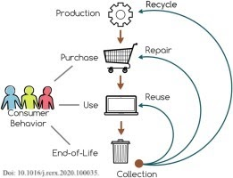

Effective e-waste management requires collaboration among various stakeholders, including consumers, manufacturers, recyclers, and policymakers.
1.Consumer Responsibility: Consumers can play a significant role by making informed choices when purchasing electronic devices and properly disposing of their electronic waste through designated collection points or take-back programs.
2.Manufacturer Initiatives: Manufacturers can design products with recyclability in mind, implement take-back programs for their products, and support e-waste recycling initiatives through financial contributions or partnerships.
Recycler Efforts: Recyclers can invest in advanced technologies and ensure responsible handling of e-waste, adhering to environmental and safety regulations while maximizing the recovery of valuable materials.
Policymaker Role: Policymakers can develop and enforce e-waste management regulations, provide incentives for responsible practices, and raise public awareness about the importance of proper e-waste disposal.
3.Innovative Solutions: Emerging Technologies for E-Waste Recycling
As the volume of e-waste continues to grow, new and innovative technologies are emerging to address this challenge.
Advanced Sorting and Separation: Techniques such as optical sorting, X-ray fluorescence, and robotics are being used to more efficiently separate and sort different components and materials from e-waste.
Efficient Material Recovery: New processes are being developed to recover valuable materials from e-waste more efficiently, such as hydrometallurgical and metallurgical methods for extracting precious metals.
Recycling Complex Components: Researchers are exploring ways to recycle complex electronic components, such as printed circuit boards and batteries, which are challenging to disassemble and process.